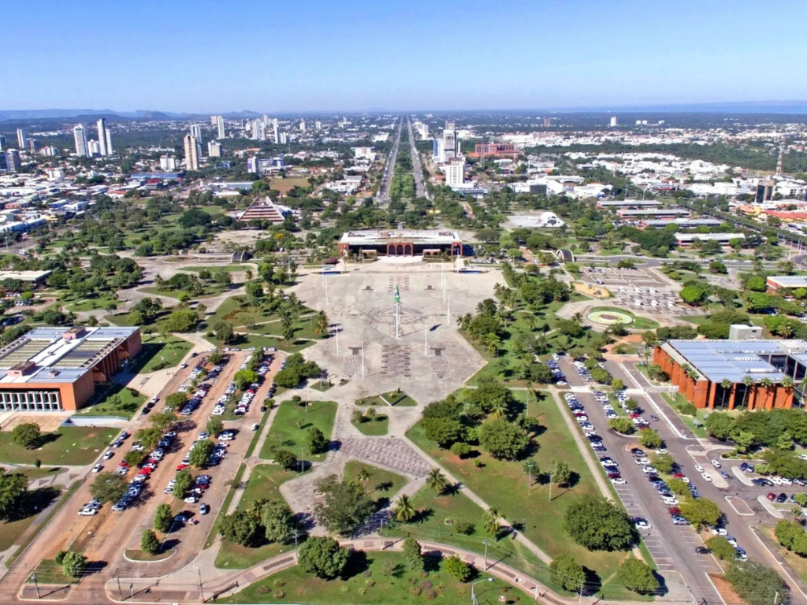

ocantins é o estado mais jovem do Brasil, criado em 1988, e atua como uma zona de transição entre a Floresta Amazônica e o Cerrado. Localizado geograficamente no coração do país, o estado é um dos principais polos do agronegócio nacional, destacando-se na produção de grãos e na pecuária. Sua capital planejada, Palmas, é conhecida por suas amplas avenidas e pelo calor intenso, sendo banhada por um gigantesco lago formado pelo Rio Tocantins. Um dos seus maiores tesouros é o Jalapão, um destino turístico famoso por suas dunas de areia alaranjada, fervedouros de águas cristalinas e cachoeiras exuberantes, que atraem aventureiros de todo o mundo.
